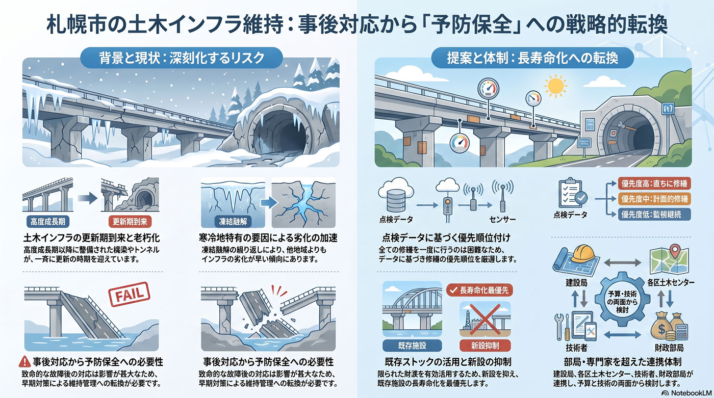

インフラ老朽化
10年以内
橋梁・トンネル等の土木インフラ維持
橋やトンネルなど土木インフラも更新期を迎え、長寿命化が課題となる。

背景
道路橋やトンネル、河川施設などの土木インフラも高度成長期以降に整備が進み、更新期に入る。寒冷地特有の凍結融解による劣化も加わり、点検と計画的な維持管理の負担が増す。
事実
- 道路・橋梁などの土木インフラの老朽化が進み、計画的な維持管理・長寿命化が求められている。
解釈
橋やトンネルは壊れてからでは影響が大きく、寒冷地では劣化も早い。予防保全に切り替え、限られた財源で優先順位をつける必要がある。
提案
- 点検データに基づく予防保全と更新の優先順位付け。
- 新設抑制と既存ストックの長寿命化。
検討体制・メンバー
札幌市建設局（道路・橋梁）と各区土木センターが維持管理を担う。検討会には橋梁・土木の技術者、点検技術（ドローン・センサー）の専門家、財政部局を入れ、限られた予算での予防保全の優先順位を決める。
AIノート
AIの貢献度は中〜大。ドローン・カメラ画像のAI判定でひび割れや劣化を効率的に検出し、点検の省力化と精度向上に直結する。劣化予測で更新の優先順位を最適化でき、寒冷地特有の劣化パターンの学習も有効。